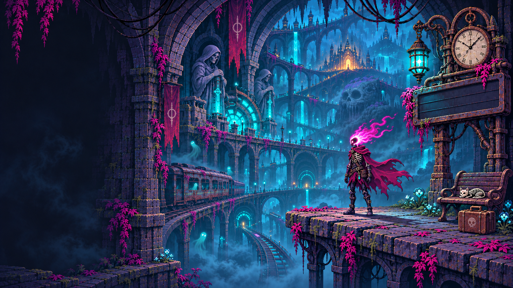
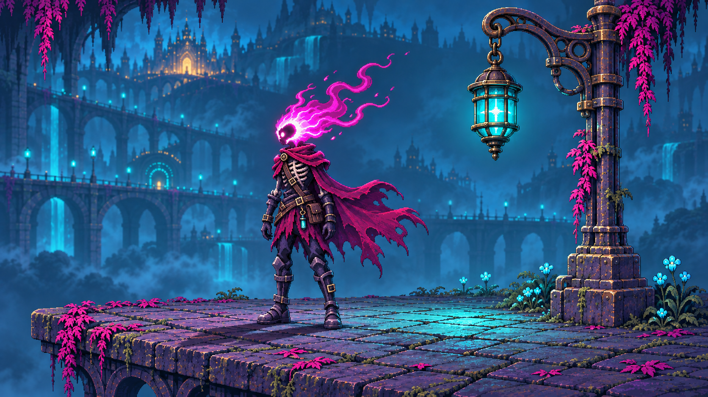
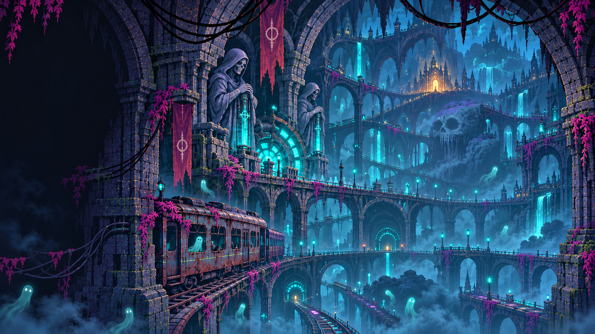

Flame and cloth
Authored shape changes, each with a fixed attachment and deliberate frame holds. Keep the skull, neck seam and boots registered.
MAIN MENU · ILLUSTRATED PIXEL ART · STILL STUDIES
New artwork studies carrying forward the original's weathered stone, deep city, fine character detail, and cyan/magenta light. The animation lessons guide how the artwork will move.
Quiet shadow on the left leaves room for the real menu. The city gives depth; the traveller and station props anchor the right. The departure board is blank so its lettering can be composed separately.

A closer study of the traveller, lantern, paving and light. Check the exposed bone, cloth folds, iron fittings, chipped stone and planted boots together.

These images establish the visual finish. Production will draw separate layers and changing shapes at this level of detail. The studies are flattened references; the layer files and animation frames remain to be made.
Authored shape changes, each with a fixed attachment and deliberate frame holds. Keep the skull, neck seam and boots registered.
A separate lantern housing hangs from its link. Clock hands turn around their real pivot. Local emission masks vary gently.
Stationary architecture and paving provide clean backing behind moving parts. Separate foreground leaves and prop edges provide occlusion.
Cyan lantern light and nearby magenta flame light agree across materials. Boots stay grounded with contact and cast shadows.
The original establishes the detail, atmosphere and depth we are preserving.
